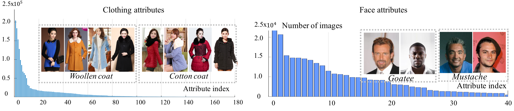
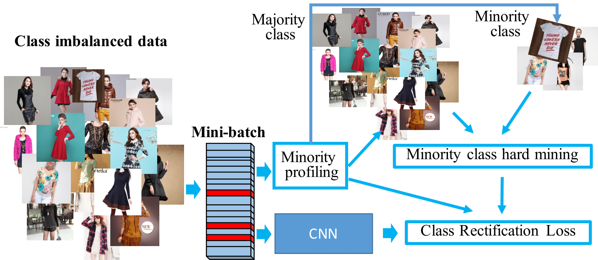
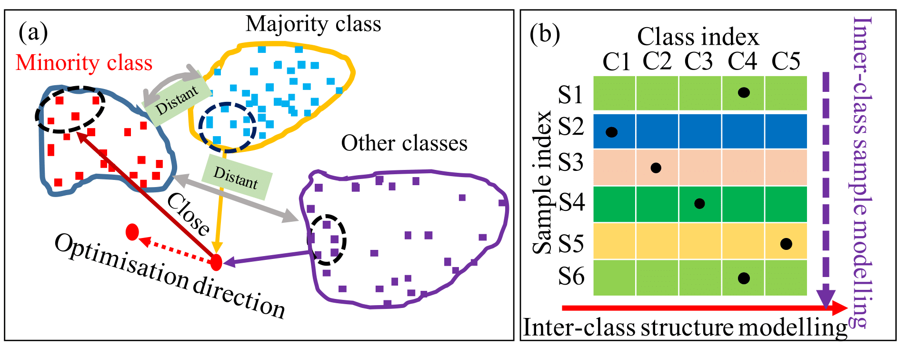
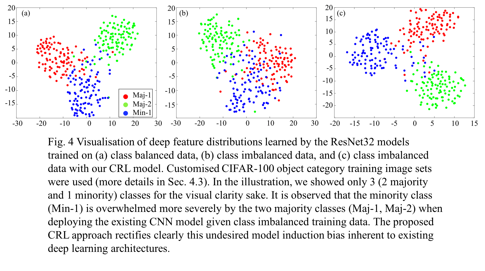
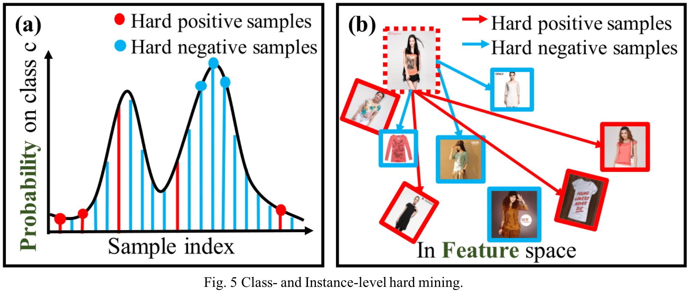

Qi Dong1, Shaogang Gong1, and Xiatian Zhu2
1School of Electronic Engineering and Computer Science, Queen Mary University of London, UK.
2Vision Semantics Ltd., London, UK.
IEEE Transactions on Pattern Analysis and Machine Intelligence (TPAMI), 2018.
[PDF]
[Slides]
[Poster]
Abstract
Model learning from class imbalanced training data is a long-standing and significant challenge for machine learning (Fig. 1). In particular, existing deep learning methods consider mostly either class balanced data or moderately imbalanced data in model training, and ignore the challenge of learning from significantly imbalanced training data. To address this problem, we formulate a class imbalanced deep learning model based on batch-wise incremental minority (sparsely sampled) class rectification by hard sample mining in majority (frequently sampled) classes during model training. This model is designed to minimise the dominant effect of majority classes by discovering sparsely sampled boundaries of minority classes in an iterative batch-wise learning process. To that end, we introduce a Class Rectification Loss (CRL) function that can be deployed readily in deep network architectures. Extensive experimental evaluations are conducted on three imbalanced person attribute benchmark datasets (CelebA, X-Domain, DeepFashion) and one balanced object category benchmark dataset (CIFAR-100). These experimental results demonstrate the performance advantages and model scalability of the proposed batch-wise incremental minority class rectification model over the existing state-of-the-art models for addressing the problem of imbalanced data learning.

Scalable Imbalanced Deep Learning
The proposed Class Rectification Loss (CRL) is a novel approach to imbalanced deep learning by minority class incremental rectification using batch-wise mining of hard samples on the minority classes in a batch-wise optimisation process (Fig. 2). The computational complexity of imposing this rectification loss is restrained by iterative mini-batch-wise model optimisation (small data pools). We explore a hard sample mining strategy to enhance minority class manifold rectification by selectively “borrowing” majority class samples from class decision boundary marginal (border) regions. Specifically, we estimate minority class neighbourhood structure by mining both hard-positive and hard-negative samples for every selected minority class in each mini-batch of training data (Fig. 3). Our idea is to rectify incrementally the per-batch class distribution bias of multi-labels in model learning. Hence, each improved intermediate model from per-batch training is less inclined towards the over-sampled majority classes and more discriminative to the under-sampled minority classes (Fig. 4)


- Incremental batch-wise class profiling for pointing out minority classes and majority classes.
- There are two hardness metrics: (1) Score based: A model’s class prediction score, suitable for class-level hard mining. (2)Feature based: The feature distance between data points, suitable for instance-level hard mining (Fig. 5).
- We design the CRL regularisation by the learning-to-rank principle specifically on the minority class hard samples; and explore three loss criteria for CRL at both class-level and instance-level: (1) Relative Comparison; (2) Absolute Comparison; and (3) Distribution Comparison.


Citation
@article{dong2017class,
title={Class rectification hard mining for imbalanced deep learning},
author={Dong, Qi and Gong, Shaogang and Zhu, Xiatian},
year={2017},
publisher={IEEE}
}
@article{dong2018imbalanced,
title={Imbalanced Deep Learning by Minority Class Incremental Rectification},
author={Dong, Qi and Gong, Shaogang and Zhu, Xiatian},
journal={IEEE Transactions on Pattern Analysis and Machine Intelligence},
year={2018},
publisher={IEEE}
}
Please feel free to send any questions and/or comments to Qi Dong at q.dong@qmul.ac.uk